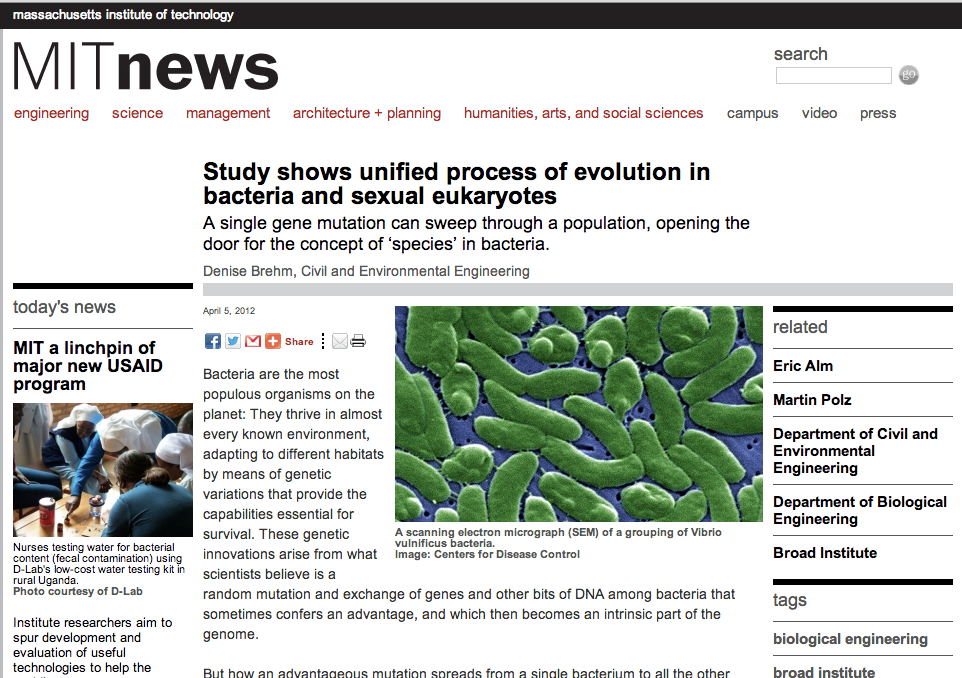

Study shows unified process of evolution in bacteria and sexual eukaryotes
Original source:
MIT News
April 5, 2012
By Denise Brehm, Civil and Environmental Engineering
A single gene mutation can sweep through a population, opening the door for the
concept of 'species' in bacteria. Denise Brehm, Civil and Environmental
Engineering April 5, 2012 Bacteria are the most populous organisms on the
planet: They thrive in almost every known environment, adapting to different
habitats by means of genetic variations that provide the capabilities essential
for survival. These genetic innovations arise from what scientists believe is a
random mutation and exchange of genes and other bits of DNA among bacteria that
sometimes confers an advantage, and which then becomes an intrinsic part of the
genome.
But how an
advantageous mutation spreads from a single bacterium to all the
other bacteria in a population is an open scientific question. Does the gene
containing an advantageous mutation pass from bacterium to bacterium, sweeping
through an entire population on its own? Or does a single individual obtain the
gene, then replicate its entire genome many times to form a new and
better-adapted population of identical clones? Conflicting evidence supports
both scenarios.
In a paper appearing in the April 6 issue of Science, researchers in MIT's
Department of Civil and Environmental Engineering (CEE) provide evidence that
advantageous mutations can sweep through populations on their own. The study
reconciles the previously conflicting evidence by showing that after these gene
sweeps, recombination becomes less frequent between bacterial strains from
different populations, yielding a pattern of genetic diversity resembling that
of a clonal population.
This indicates that the process of evolution in bacteria is very similar to that
of sexual eukaryotes - which do not pass their entire genome intact to their
progeny - and suggests a unified method of evolution for Earth's two major life
forms: prokaryotes and eukaryotes.
The findings also get to the heart of another scientific question: how to
delineate species of bacteria - or determine if the term "species" even applies
to bacteria, which are typically identified as ecological populations and not
species. If all bacteria in a population are clones from a common ancestor, the
idea of species doesn't apply. But if, as this new study shows, genes randomly
shared among individuals can bring about a new, ecologically specialized
population, use of the term may be warranted.
"We found that the differentiation between populations was restricted to a few
small patches in the genome," says Eric Alm, the Karl Van Tassel (1925) Career
Development Associate Professor of Civil and Environmental Engineering and
Biological Engineering and an associate member of the Broad Institute.
Professor Martin Polz of CEE, co-principal investigator on the project, adds,
"Similar patterns have been observed in animals, but we didn't expect to see it
in bacteria."
The process of ecological differentiation in bacteria, the researchers found, is
similar to that in malaria-transmitting mosquitoes: Some populations develop
resistance to antimalarial agents by means of a single gene sweep, while other
populations sharing the same habitat do not. The stickleback fish has also been
shown to follow this pattern of "sympatric speciation" in shared habitats.
"Even though the sources of genetic diversity are quite different between
bacteria and sexual eukaryotes, the process by which adaptive diversity spreads
and triggers ecological differentiation seems very similar," says first author
Jesse Shapiro PhD '10, a postdoc at Harvard University who did his graduate work
in Alm's lab at MIT.
The researchers performed the work using 20 complete genomes of the bacterium
Vibrio cyclitrophicus that had recently diverged into two ecological populations
adapted to microhabitats containing different types of zooplankton,
phytoplankton, and suspended organic particles in seawater. In a previous study
based on just a few marker genes, they had predicted that these closely related
Vibrio populations were in the process of developing into two distinct
habitat-associated populations.
The new study shows that the two populations were frequently mixed by genetic
recombination, remaining genetically distinct at just a handful of ecologically
adaptive genes, with an increasing trend toward gene-sharing within - rather
than between - habitats.
"This is the most sophisticated paper on bacterial speciation to appear yet, all
the more so because it uses the dubious word 'species' only once, and that with
caution," says W. Ford Doolittle, a professor emeritus of biochemistry at
Dalhousie University in Canada. "The genetic basis of ecological differentiation
in bacteria - how genotype maps to ecotype and what processes determine this
mapping - is in my mind the biggest issue in modern microbial ecology."
Other co-authors on the paper are MIT graduate student Jonathan Friedman,
postdocs Otto Cordero and Sarah Preheim, graduate student Sonia Timberlake, and
Gitta Szabo of the University of Vienna in Austria. Funding was provided by the
National Science Foundation, the Gordon and Betty Moore Foundation, and the
Broad Institute.